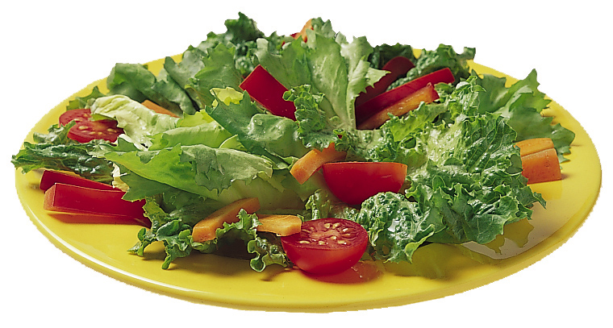

Garden salad
Your classic and common salad that is found worldwide. Made with lettuce such as iceberg, romaine, or mesclun greens and including toppings such as tomatoes, carrots, onions, cucumbers, mushrooms, and bell peppers. We have all been forced to eat a salad like this one before! It's healthy, it's boring, and it can taste surprisingly good! And as such, the garden salad wins 5th place.
